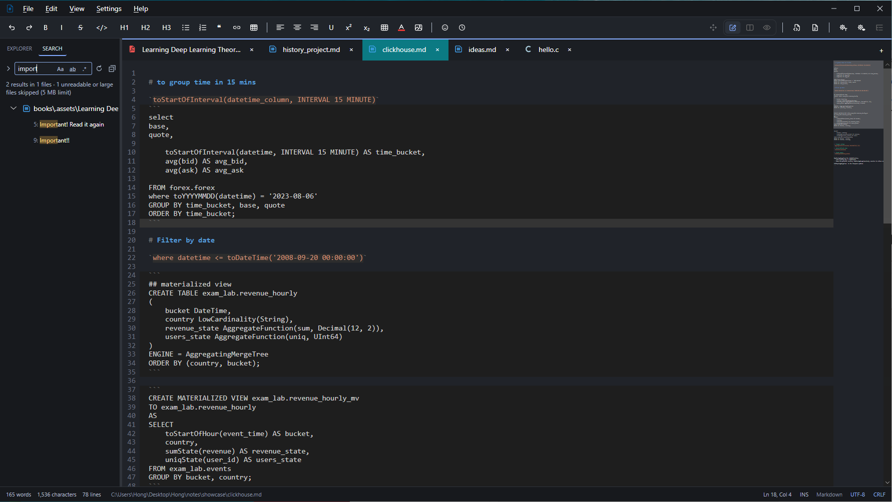

No lock-in
Standard Markdown. Nothing proprietary.
Every note is an ordinary .md file in an ordinary folder. MDHub sticks to standard Markdown and deliberately leaves out custom syntax, so your notes read the same in any other Markdown viewer, or in Notepad.
No database, no special file format, and no hidden metadata files dropped into your folders.
- Open your existing notes folder. No import, no migration, no setup.
- Edit the same files with any other tool, any time.
- Stop using MDHub tomorrow and your notes are exactly where you left them.
# Saturday ## To do - [x] Draft the release notes - [ ] Reply to the design feedback Meeting notes are in [project.md](../work/project.md).
